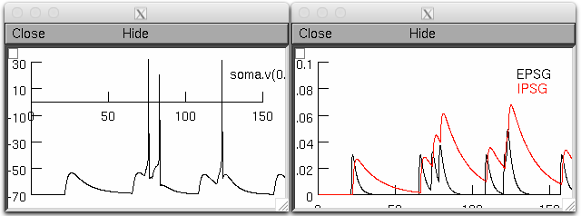
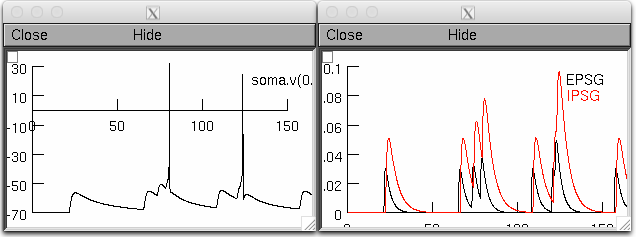

This is the readme for the model associated with the paper:
Kim, J. K. & Fiorillo, C. D. Theory of optimal balance predicts and
explains the amplitude and decay time of synaptic
inhibition. Nat. Commun. 8, 14566 doi: 10.1038/ncomms14566 (2017).
This model was contributed by Jaekyung Kim.
This is a single-compartment model of a generic neuron. It was edited
from the single-compartment model of thalamocortical (TC) relay
neurons used in Destexhe et al. (1998). It includes passive (leakage),
excitatory synaptic (AMPAergic), inhibitory synaptic (GABAergic or
glycinergic), sodium and potassium (for action potential)
conductances. It was used to test optimal parameters of synaptic
inhibition.
Two "~.hoc" files provide voltage responses for the EPSG ensemble of
mean rate of 50 Hz, with parameters of IPSG before learning and after
learning by learning rule 2 shown in Fig. 8 in Kim and Fiorillo
(2017).
This model was developed in Neuron 7.3.
PROGRAMS and FILES
==================
Before_learning.hoc : Voltage response with default parameters of
synaptic inhibition.
After_learning.hoc : Voltage response with default parameters learned
from anti-Hebbian learnng rule (Rule 2 of
Fig. 8 in Kim and Fiorillo (2017)).
IEIs_50Hz.tmp : Randomized inter-EPSG interval simulated in Kim
and Fiorillo (2017).
tc1.geo : Geometry for single-compartment
MECHANISMS
==========
hh2.mod : Fast spikes (Na+ and K+ currents)
netstims.mod : Presynaptic spike generator
HOW TO RUN
==========
Either auto-launch from ModelDB or:
After compiling the mod files and starting the simulation with "~.hoc" files.
For additional help see:
https://senselab.med.yale.edu/ModelDB/NEURON_DwnldGuide.html
If starting from mosinit.hoc or init.hoc choose a simulation by
clicking a button. Before learning generates these graphs:

After learning generates these graphs:

For further information, please contact Jaekyung Kim (kimjack0@kaist.ac.kr)